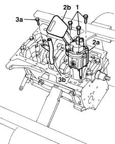
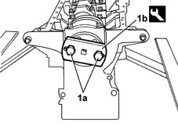
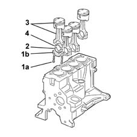
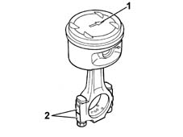
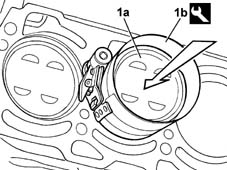
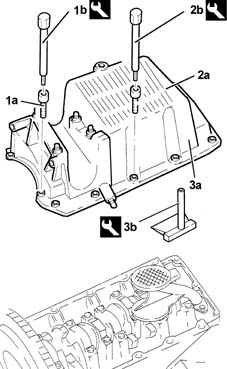
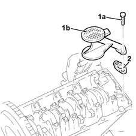
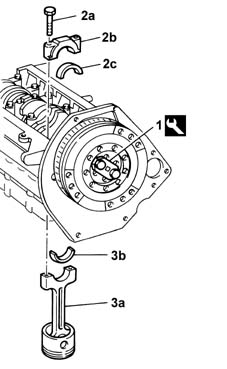
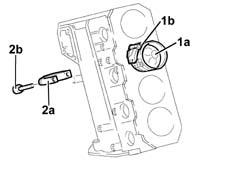
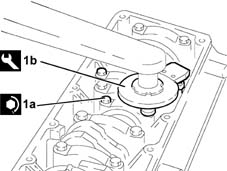

1028H14 piston connecting rod set - r r
- Path
- Procedures > 10 ENGINE UNIT > 1028 PISTONS AND CONNECTING RODS > 1028H pistons and connecting rods > 1028H14 piston connecting rod set - r r
- Kind
- repair procedure (removal / refitting; the operation number is the code)
- Applies to
- all engines; all production periods
- Interactive page
- https://sloeber94.github.io/elrnDB-fMltpl/en/#/2892345
Applies to: engines: 1.6 16v; all production periods
 Removing
Removing
 Refitting
Refitting1020A24 crank case oil sump - r + r clean seals for sealant application with engine removed
1. Undo the bolts.
2. Remove the engine oil pump (2a), complete with draught device (2b).
Recover the oil pump gasket.
3. Undo the fixing bolt (3a) and remove the section of the engine oil dipstick inside the cylinder block/crankcase (3b).

Applies to: engines: 1.6 16v; all production periods
1. Using the service bolts (1a), fit the tool (1b) for rotating the crankshaft.
 | Name | Country |
|---|---|---|
1b | Flange | 1.860.815.000 |

Applies to: engines: 1.6 16v; all production periods
1. Undo the fixing bolts (1a) and remove the connecting rod cap (1b).
2. Remove the lower big end bearing shell.
3. Remove the connecting rod - piston assembly.
4. Remove the upper connecting rod half-bearing.

Applies to: engines: 1.6 16v; all production periods
Refitting
RemovingRotate the crankshaft using the tool fitted previously.
1. The connecting rod-piston assemblies are fitted with the engine rotation arrow (1a) stamped on the piston crown facing the inlet side.
2. Check that the stamps for the cylinder liner/bore to which the connecting rod belongs are on the exhaust side.

Applies to: engines: 1.6 16v; all production periods
1. Fit the connecting rod-piston assembly (1a), complete with half-bearing, using the tool (1b) for compressing the piston rings and later introducing the piston in the liner/bore.
| Name | Country |
|---|---|---|
- | Fitting tool | 1.860.700.000 |

Applies to: engines: 1.6 16v; all production periods
Fit the connecting rod caps.
Tighten the nuts fixing the connecting rod caps to torque.
 | Fastening | Component | Ø | Value (daNm) |
|---|---|---|---|---|
- | Nut | CONNECTING ROD CAP FASTENERS | M9 | 5.1 |
Remove the tool for rotating the crankshaft.
| Name | Country |
|---|---|---|
- | Flange | 1.860.815.000 |
Fit the section of the engine oil dipstick inside the cylinder block/crankcase.
Position a new oil pump gasket.
Fit the oil pump tightening the fixing bolts to torque.
| Fastening | Component | Ø | Value (daNm) |
|---|---|---|---|---|
- | Bolt | ENGINE OIL PUMP | M6 | 2.5 |
1020A24 crank case oil sump - r + r clean seals for sealant application with engine removed
Applies to: engines: 1.9 JTD 8V; all production periods
Removing
Refitting1. Undo the front and rear bolts (1a) for the crankcase sump using tool (1b).
| Name | Country |
|---|---|---|
1b | Key | 1.860.833.000 |
2. Undo the side bolts (2a) for the crankcase sump using tool (2b).
| Name | Country |
|---|---|---|
2b | Key | 1.860.834.000 |
3. Remove crankcase sump (3a).
| Name | Country |
|---|---|---|
3b | Blade | 1.870.718.000 |

Applies to: engines: 1.9 JTD 8V; all production periods
1. Undo the bolts (1a) and remove the engine oil inlet (1b).
2. Remove the gasket.

Applies to: engines: 1.9 JTD 8V; all production periods
1. Fit the tool and rotate the crankshaft until the cylinder concerned is at B.D.C.
| Name | Country |
|---|---|---|
1 | Flange | 1.860.815.000 |
2. Undo bolts (2a) and remove big end bearing caps (2b) complete with bearing shells (2c).
3. Remove connecting rod - piston assembly (3a) complete with half-bearing (3b).
Proceed in the same way with the removal of the pistons and connecting rods for the remaining cylinders.

Applies to: engines: 1.9 JTD 8V; all production periods
Refitting
RemovingRotate the cylinder block/crankcase through 90° on the overhauling stand.
Rotate the crankshaft using the tool fitted previously until the cylinder concerned is at B.D.C.
1. Fit the piston - connecting rod assembly (1a), complete with half-bearing, using the tool (1b).
2. Fit the big end bearing cap (2a) complete with half-bearing and fix it using the bolts (2b) without tightening them.
Work in the same way when refitting the pistons and connecting rods for the remaining cylinders.

Applies to: engines: 1.9 JTD 8V; all production periods
Rotate the cylinder block/crankcase through 90° on the overhauling stand.
1. Tighten the big end bearing cap bolts (1a) to torque; use the tool (1b) for the angular tightening.
| Fastening | Component | Ø | Value (daNm) |
|---|---|---|---|---|
1a | Bolt | BIG END BEARING CAPS | M9 | 2.4 - 2.6 + 60° |
| Name | Country |
|---|---|---|
1b | Protractor | 1.860.942.000 |

Applies to: engines: 1.9 JTD 8V; all production periods
Remove the tool.
| Name | Country |
|---|---|---|
- | Flange | 1.860.815.000 |
Fit the engine oil inlet complete with gasket and secure using the bolts.
Apply sealant to the entire perimeter of the crankcase sump.
 | Type | Component | Name | Qty. |
|---|---|---|---|---|
- | Sealant | OIL SUMP | Silicon sealant | - |
Fit the crankcase sump.
Tighten the side bolts for the crankcase sump to torque using the tool.
| Fastening | Component | Ø | Value (daNm) |
|---|---|---|---|---|
- | Side bolts | OIL SUMP | M8 | 2.1 - 2.6 |
| Name | Country |
|---|---|---|
- | Key | 1.860.834.000 |
Tighten the front and rear bolts for the crankcase sump to torque using the tool.
| Fastening | Component | Ø | Value (daNm) |
|---|---|---|---|---|
- | Front and rear bolts | OIL SUMP | M6 | 0.7 - 0.9 |
| Name | Country |
|---|---|---|
- | Key | 1.860.833.000 |
Tighten the bolt securing the oil sump to the intermediate shaft support.